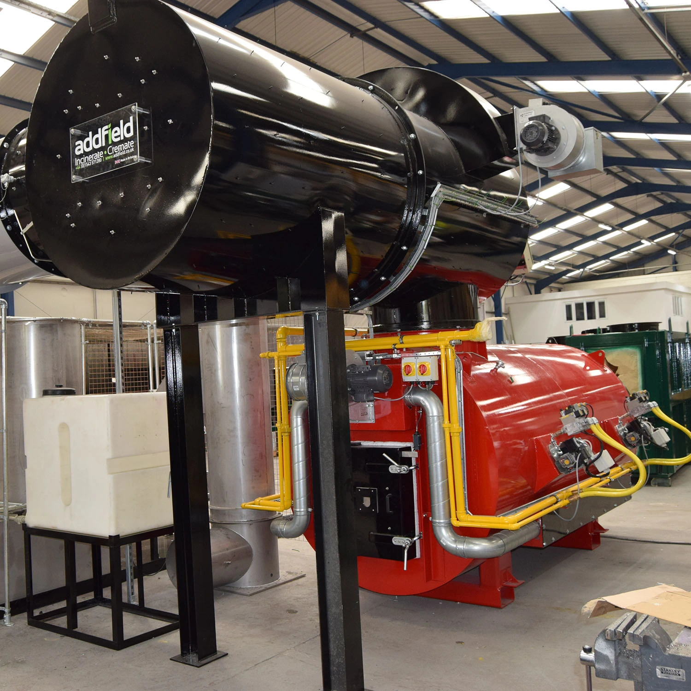
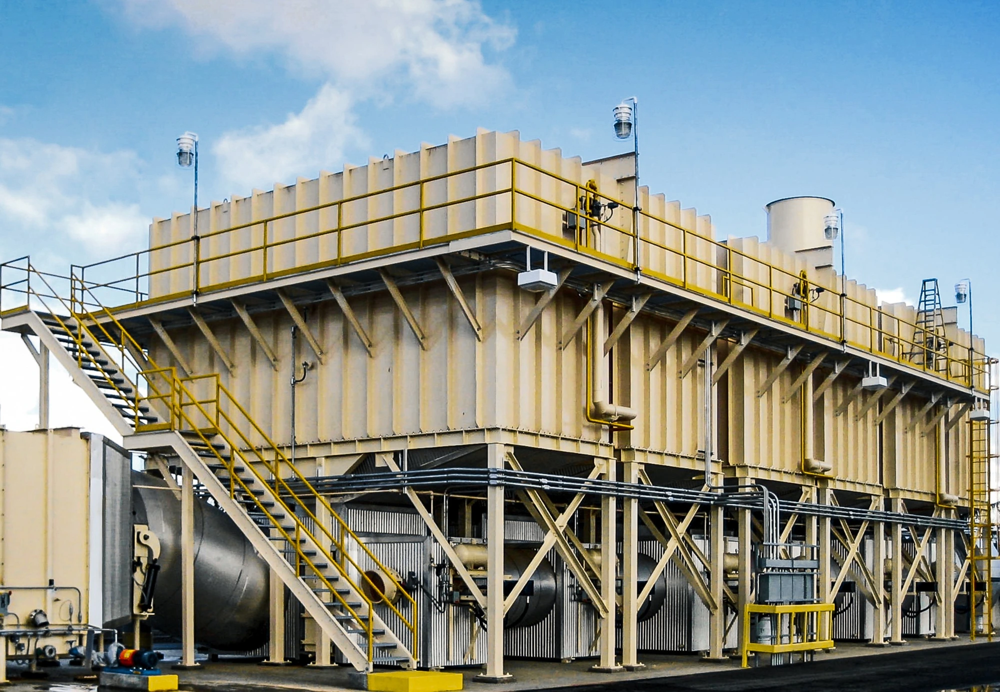
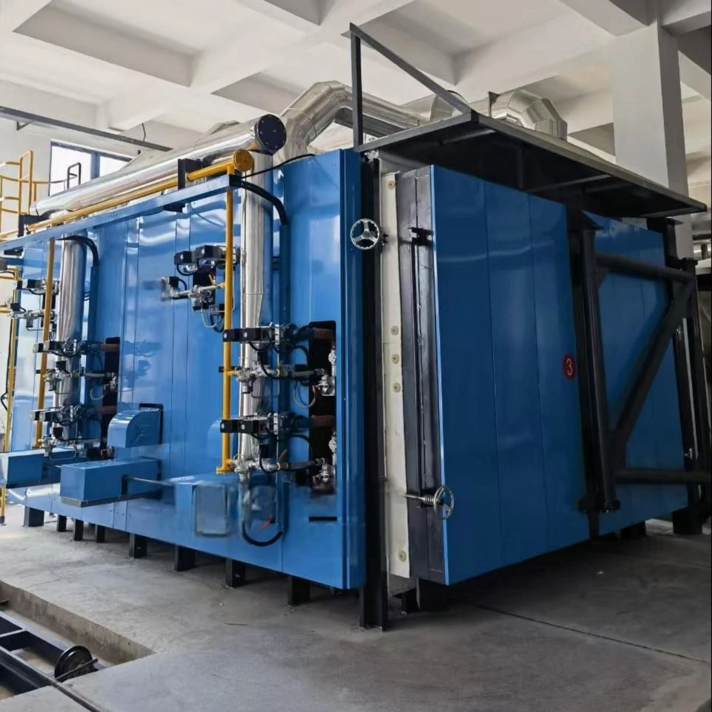
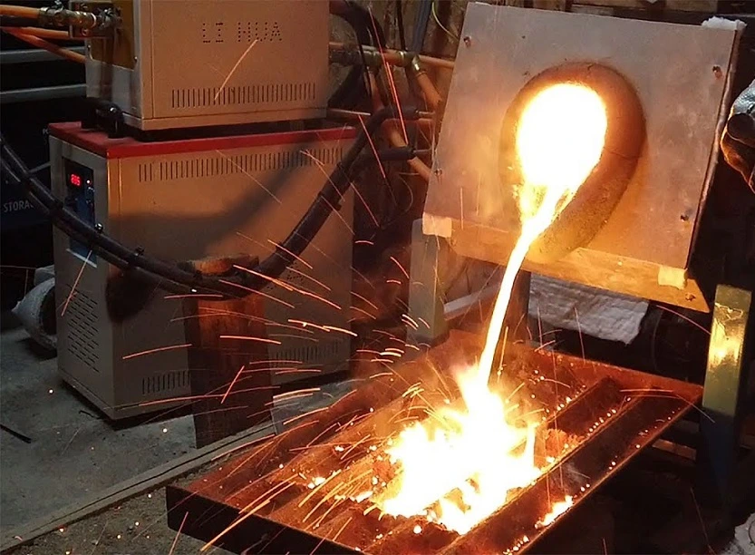
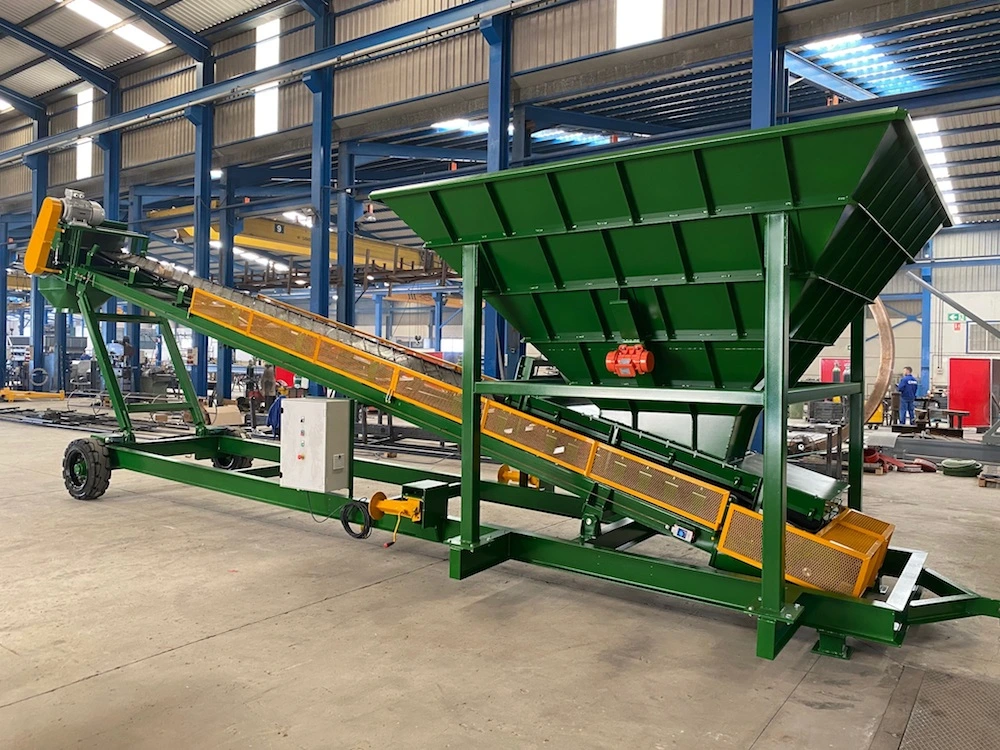
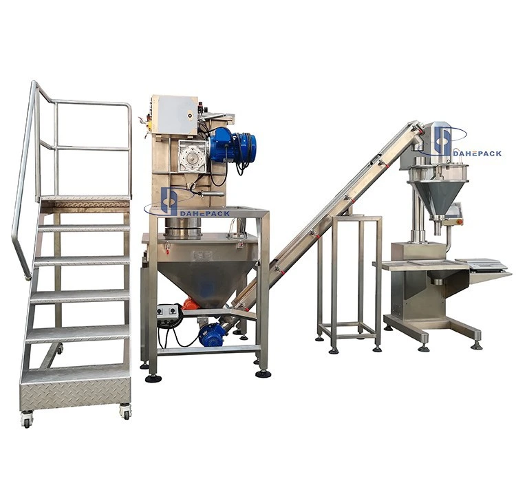
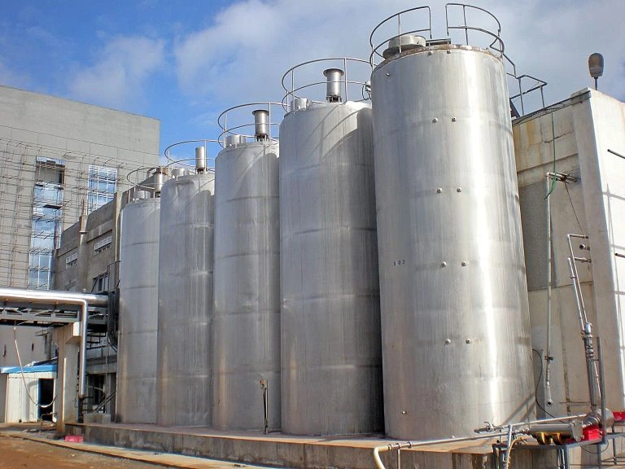

Options & accessoires
- Systèmes de contrôle et d’automatisation
- Brûleurs gaz, fioul ou biomasse selon l’équipement
- Grilles réfractaires, ventilateurs, échangeurs et cheminées
- Pièces et structures métalliques sur mesure
Explorez les équipements présentés dans notre catalogue. La configuration de chaque installation fait l’objet d’une étude technique.
Visuels des équipements présentés dans le catalogue JABRI X. La configuration est définie pour chaque projet. Crédits photographiques →
 01
01Coques d’argan, bois et biomasse
→02Production continue de charbon
→ 03
03Biochar, bio-huile et gaz
→
04Traitement des déchets de soins
→ 05
05Déchets industriels sélectionnés
→ 06
06Déchets ménagers et assimilés
→Stations d’épuration et industries
→
08Gaz et vapeurs industriels
→ 09
09Compatibilité après analyse
→ 10
10Cyclones, filtres et laveurs de gaz
→
14Céramique et faïence
→15Transformation thermique des minéraux
→
16Métaux non ferreux · petites capacités
→
11Manutention de matériaux
→
12Alimentation régulière et contrôlée
→
13Stockage, mélange et traitement
→Chaque étude commence par les bonnes informations. Notre équipe vous accompagne pour les réunir.
Précisez la nature des matières ou déchets, les volumes estimés, leur état physique, le rythme de fonctionnement souhaité et le lieu d’implantation. Des photos et plans du site peuvent compléter votre demande.
Le catalogue présente des familles de solutions. Le dimensionnement, les matériaux, l’alimentation, les options de contrôle et les accessoires sont étudiés selon les contraintes du projet.
Le catalogue le destine aux déchets médicaux non chimiques et non radioactifs. La compatibilité précise des flux doit être validée pendant l’étude technique.
JABRI X présente un accompagnement comprenant préparation de l’installation, mise en service, formation des opérateurs et transfert de compétences. Le périmètre est défini dans votre offre.
Ils dépendent de la configuration retenue, de la capacité, des accessoires et des conditions d’installation. Contactez JABRI X pour obtenir une proposition adaptée à votre besoin.
Les opérations de contrôle, de nettoyage et d’entretien sont organisées selon l’équipement et les conditions d’exploitation. JABRI X propose également assistance technique, diagnostic et accompagnement pour les pièces de rechange.
Contactez-nous pour une étude, une demande d’équipement ou un besoin d’assistance.
Présentez votre activité, vos matières et vos objectifs à l’équipe JABRI X.